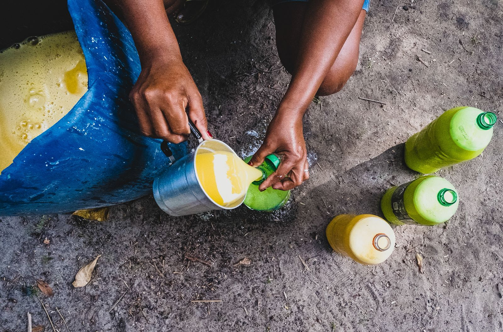
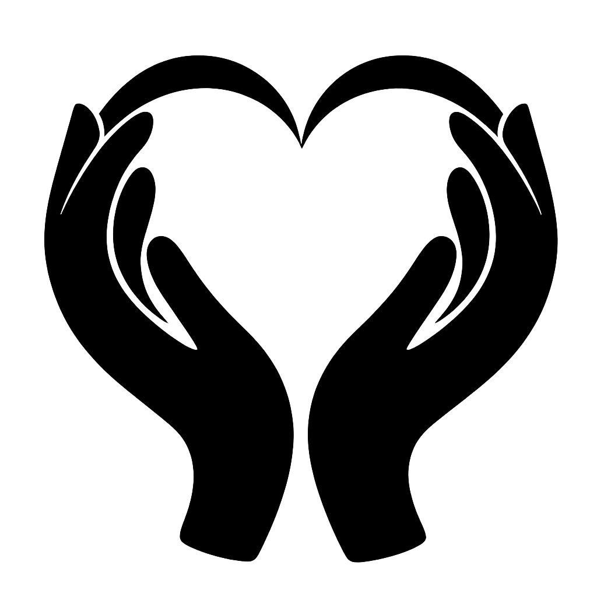
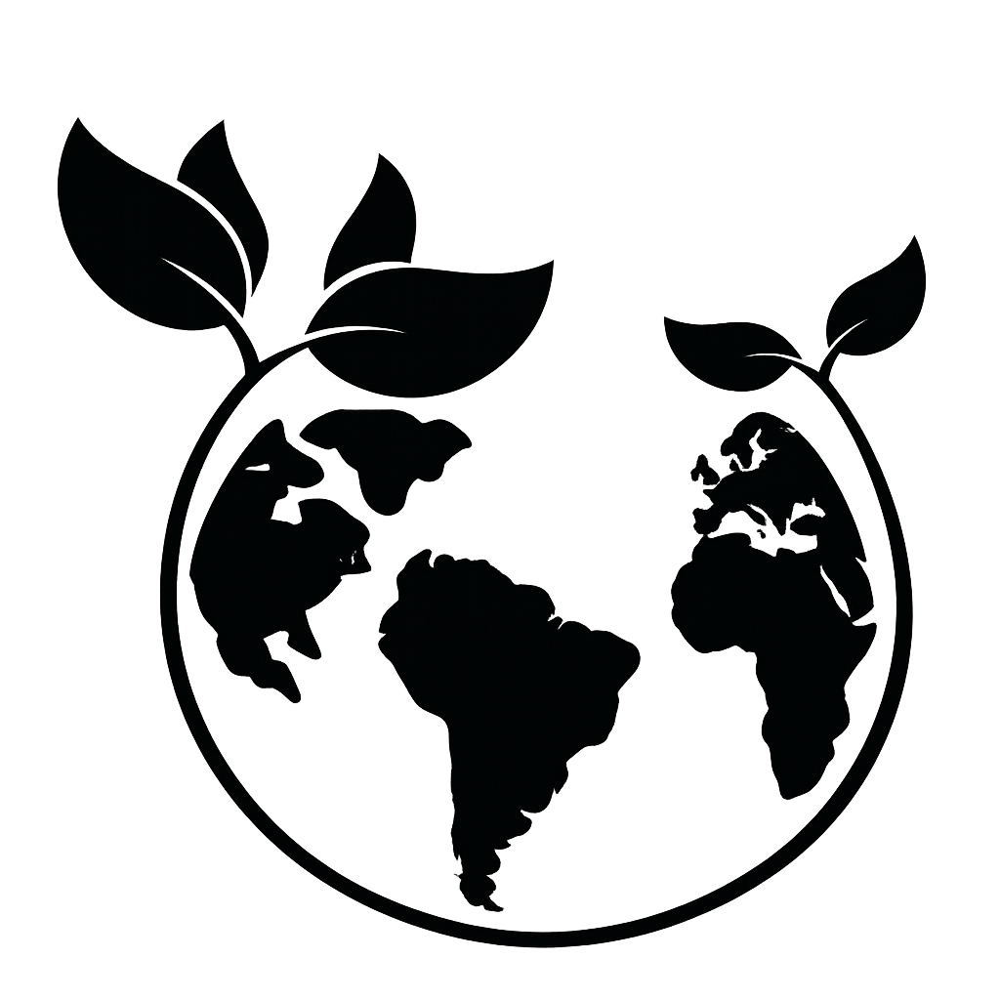

GUARDIÃS DA FLORESTA
Uma iniciativa que fortalece o protagonismo feminino nas comunidades ribeirinhas e extrativistas da Amazônia, unindo identidade, território e sustentabilidade.
Foto: Patrícia Brasil

Foto: Patrícia Brasil
Sobre o projeto
O Guardiãs da Floresta nasce do reconhecimento de que as mulheres são agentes centrais na conservação dos ecossistemas amazônicos. Por meio da sociobioeconomia, buscamos gerar autonomia econômica sem romper o vínculo sagrado com a floresta.
Trabalhamos com comunidades ribeirinhas, extrativistas e indígenas, colocando o gênero no centro das estratégias de desenvolvimento sustentável.
Pilares
Formação de mulheres em técnicas de manejo sustentável e valorização dos produtos florestais, em modelos de economia circular e cooperativismo. Alcançar cadeias de valor sensíveis a gênero, através também do empreendedorismo feminino, formalização de negócios, educação financeira, acesso a crédito e mercados, e tecnologias sociais.

Promoção de saúde integral das mulheres, a partir da prevenção e de práticas naturais de cuidado. Incorporar os conhecimentos tradicionais às práticas formais de saúde pública, com vistas à inovação. Desenvolvimento de ações voltadas à segurança física, nutricional e de saúde mental – com perspectiva de gênero.

Articulação de temas de participação cidadã, cultura e garantia de direitos, incentivando a comunicação em rede e a governança territorial. Abordagem que trata da economia do cuidado e do fortalecimento das redes comunitárias e familiares, buscando integração com políticas públicas e a sustentabilidade das ações gestadas.
"Somos o nosso território."
"Nossa chama é para avisar que embaixo das árvores tem gente. E também para iluminar o nosso caminho."
O que fazemos
Oficinas presenciais e remotas em gestão, direitos, saúde e produção sustentável para mulheres ribeirinhas e extrativistas.
Estruturação de cooperativas e associações lideradas por mulheres, com acesso a mercados justos e certificações socioambientais.
Documentação dos saberes tradicionais e territórios, criando base para incidência política e defesa de direitos.
Levar as vozes das guardiãs para fóruns nacionais e internacionais de clima, biodiversidade e direitos das mulheres.
Parceiros & apoiadores
Faça parte
Seja você uma comunidade, organização, pesquisadora ou pessoa com interesse em apoiar a causa, entre em contato.